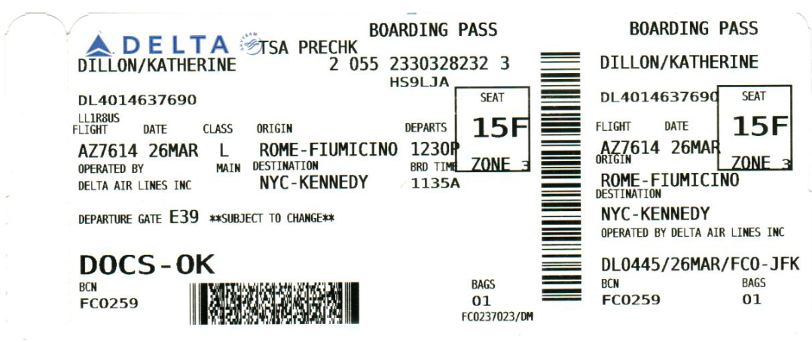

This week's assignment: redesign a boarding pass to look better. Not really a tough order when this is what you have to work with, but still lots of tricky design decisions to be made.
Grouping Things Up
I met up with my friend who's a UX designer and she gave me some tips for structuring things in a hierarchy, starting with "group things that belong together together". Following her advice I came up with a few groups: date, time for boarding and takeoff time were in a time-based group, gate seating and flight were in a flight information group, the origin and destination went together, and then I had all the stuff that I had no idea what it meant: LLRBUS, BCN, FC0259...
Who are the Users?
In the Visual Language help session, Chelsea suggested that we should always be thinking about who is going to be using our designs. For a boarding pass, I thought that there were two users to keep in mind: the person boarding the plane and the flight crew checking the ticket. I decided early on I'd try and put most of the info salient to the passenger on the left, since I consider them slightly more important, and then the random airline gibberish for the flight workers on the right. That way, each of the users would have their own section they could easily reference.
Color
Another thing to take into consideration was the color. I figured that it would be best to reinforce Delta's existing color scheme, the blue and red. So, I made the background of the passenger side of the ticket blue and turned the text white, then I made a red rectangle. That gave a visual aid to the important information inside and also broke up the text a little bit.
Visual Hierarchy
I asked a few people about their experience with boarding passes, and the responses were pretty similar: the elements they're most concerned with are boarding times and gates. I've had similar experiences, since when I'm running through the airport the two things I'm worried about are where my flight is and how soon I have until it leaves. So, I put the boarding and departure times right at the top, so you can tell at a glance how much time you have.
Next in importance is the boarding gate, which is right underneath the boarding time in a big font. To the right of it we have the seat number, boarding group, flight number and class, which are all important but are very rarely urgent.
I ended up putting the name at bottom left, which was something I was thinking about for a while. At first I had it at the top left, which is customary, but then my friend said "Why would you do that? I already know my name." In the end I decided she had a point and put it in a place of prominence but less urgency than the boarding times and gate number.
The origin and destination I put in the middle, along with the Delta logo and first barcode. Honestly, I don't think the flight origin and destination is that important, because who turns up at an airport with their bags without knowing where they're going? That said, it's still useful for layovers or transfers, which is why I made it nice and big.
On the right side of the ticket is all of the stuff normal passengers don't need to worry about, but which flight crew might find important. Additionally it restates a lot of the basic info for easy access.
Closing Thoughts
Overall I'm pretty happy with how this turned out. I think maybe a little more differentiation in the fonts or some other visual element might have made the different groupings more visually distinguishable... I briefly considered the use of images, but worried that might clutter the design up too much, though of course the result is a very English-centric boarding pass.
 Comments? Questions? Concerns? Email me
here!
Comments? Questions? Concerns? Email me
here!